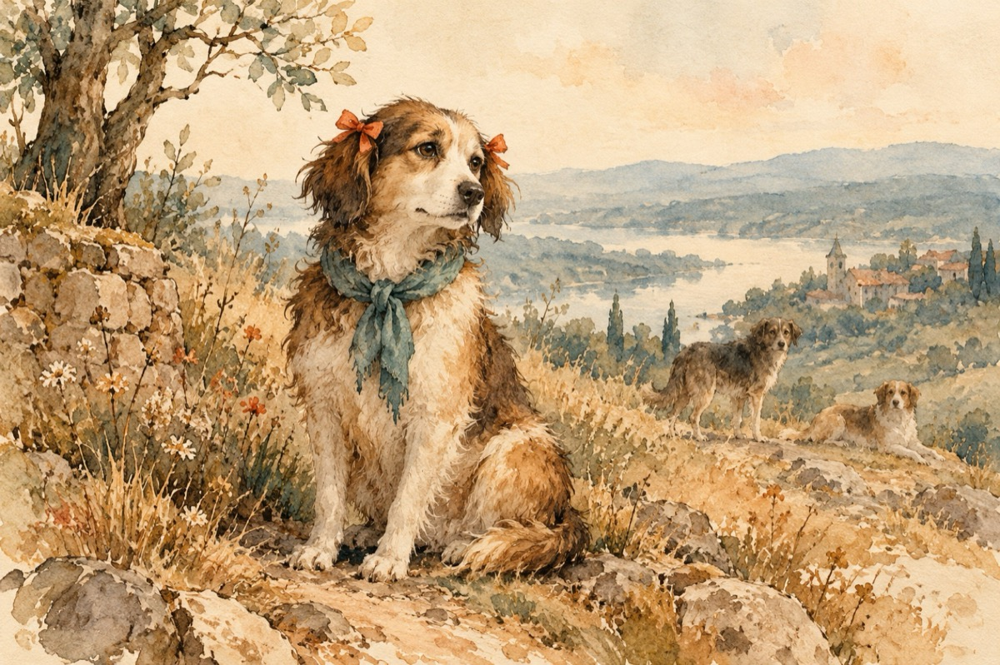

La jurizare
-Jurizăm, jurizăm, sau mi se pare
Dar trebuie să fim obiectivi
Moda este schimbătoare
Ne ia lumea noastră de naivi!
-Ce părere ai de Nușa
Pare-a fi la zi cu moda cățelușa
Și-a pus panglicuță la urechi
Și-o eșarfă la gât, din haine vechi!
-Asta nu contează
Aspectul primează
-Scuză-mă de vocabularul adecvat
Dar sunt un câine emancipat!..
Vasile Groza